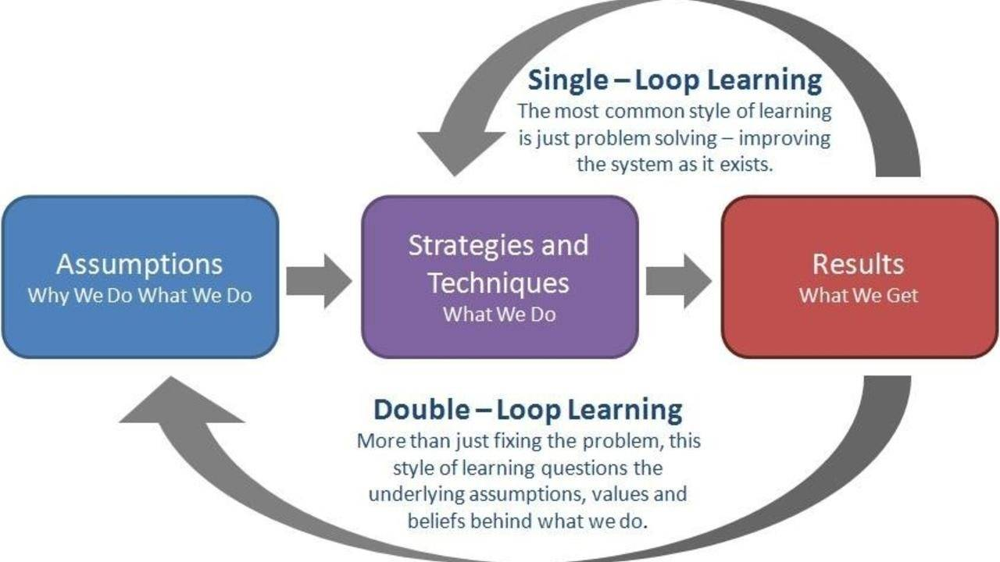

Double-Loop Learning

Double-loop learning is a way to increase innovation at a team or an orgaization. You can also apply it on your own processes or on your relationships. If you use double-loop learning, you will not only adapt to change but you will also be able to anticipate it.
What is a double-loop learning? At a high level it’s a process that have 2 feedback loops: one for changing the process itself and another one for changing the mindset and goal of the process. By mindset I mean the assumptions that lead to the creation of this process. By goals I mean the objective/s of this process.
How to build a process with double-loop learning?
Let’s skip the theory and jump into action.
- Write down existing or new process you are part of at work.
- Write down the input for this process.
- Write down the output for this process.
- Write down the first feedback loop.
- Write down the second feedback loop.
Example
I’ll add an example soon.